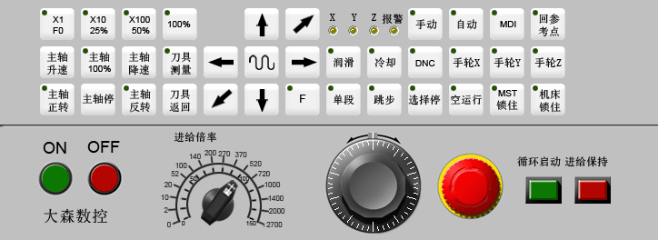
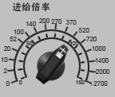

| DASEN3i-T操作面板 |
机床操作面板位于窗口的右下侧，如下图所示。主要用于控制机床的运动和选择机床运行状态，
由模式选择旋钮、数控程序运行控制开关等多个部分组成，每一部分的详细说明如下。

数控程序运行控制开关
程序运行开始；模式选择旋钮在“AUTO”和“MDI”位置时按下有效，其余时间按下无效。
程序运行停止，在数控程序运行中，按下此按钮停止程序运行。
程序单段执行。
机床主轴手动控制开关
手动开机床主轴正转
手动开机床主轴反转
手动关机床主轴
冷却液控制
冷却液开
冷却液关
冷却液自动控制
手动移动机床台面按钮
机床电源开
机床电源关
进给倍率调整

把光标置于手轮上，按鼠标左键，移动鼠标，手轮顺时针转，机床往正方向移动，手轮逆时针转，机床往负方向移动。
紧急停止
紧急停止原因消除后，请将其还原。
紧急停止中，准备完成的灯熄灭、自动运转、手动运转都不会进行，控制装置被复位。
在移动指令执行中按下“紧急停止”按钮时，移动中的轴立即停止，其它所有机械动作也停止。紧急停止状态解除后约1秒，运转准备完成的灯亮起，成为可操作状态（准备完成状态）
当参数为紧急停止保持型时，即使释放紧急停止按钮，仍会保持紧急停止状态。要解除紧急停止状态，需把复位开关设为ON。
如果每根轴的紧急停止极限开关都发挥作用，那就好像按下了紧急停止按钮，但这取决于机械的具体规格。